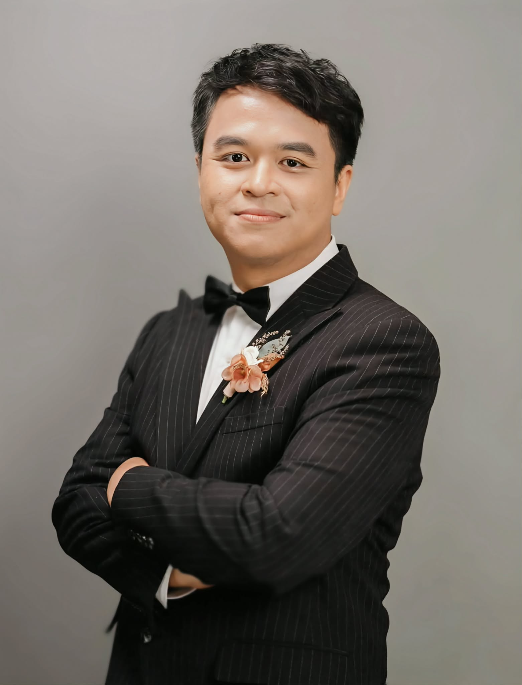

ผมเป็นผู้เชี่ยวชาญด้านการจัดการงานซ่อมบำรุงในภาคอุตสาหกรรม (Assistant Maintenance Manager) ด้วยประสบการณ์กว่า 12 ปีในสายการผลิต มุ่งเน้นการเปลี่ยนผ่านระบบซ่อมบำรุงแบบดั้งเดิมไปสู่โรงงานอัจฉริยะ (Smart Factory) ด้วยการผสานรวมเทคโนโลยีระบบอัตโนมัติ (Industrial Automation), Internet of Things (IoT) และระบบปัญญาประดิษฐ์ขั้นสูงอย่าง Agentic AI และ Retrieval-Augmented Generation (RAG) เพื่อเพิ่มประสิทธิภาพและลดเวลาในการวินิจฉัยปัญหาเครื่องจักรอย่างยั่งยืน

บริหารงานจัดการซ่อมบำรุงยุคใหม่ ควบคุมและวิเคราะห์ประสิทธิภาพเครื่องจักรและพลังงานผ่าน IDA Platform, Power BI และ Minitab เพื่อมุ่งสู่เป้าหมาย Net Zero
ปฏิบัติหน้าที่อาจารย์พิเศษ (Guest Lecturer) ถ่ายทอดความรู้ด้าน IoT และ AI พร้อมทั้งต่อยอดงานวิจัยระบบ AI Application ในงานวิศวกรรมซ่อมบำรุงที่ตีพิมพ์เรียบร้อยแล้วในฐานข้อมูล TCI
เตรียมความพร้อมศึกษาต่อในระดับปริญญาเอก (Ph.D.) ด้านการจัดการเทคโนโลยีดิจิทัล (Digital Technology Management) เพื่อขับเคลื่อนนวัตกรรมอุตสาหกรรม
เส้นทางวิชาชีพของผมเริ่มต้นจากการปูพื้นฐานอย่างเข้มข้นในสายวิชาชีพสู่วิศวกรรม สำเร็จการศึกษาระดับปริญญาตรี เทคโนโลยีบัณฑิต (ไฟฟ้าอุตสาหกรรม) จากมหาวิทยาลัยเทคโนโลยีพระจอมเกล้าพระนครเหนือ (KMUTNB) และได้พัฒนาทักษะการบริหารจัดการขั้นสูงในระดับปริญญาโท การจัดการทางวิศวกรรม (Master of Engineering Management - MEM) จากมหาวิทยาลัยรามคำแหง
ปรัชญาการบริหารทีม (Management Philosophy): ในการนำทัพทีมวิศวกรและช่างเทคนิค ผมเชื่อมั่นในการผสมผสานหลักวิทยาศาสตร์เข้ากับศิลปะการบริหารคน โดยประยุกต์ใช้โมเดลวิเคราะห์พฤติกรรมบุคคล (DISC Personality Model) และแนวคิดผู้นำตามสถานการณ์ (Situational Leadership) ร่วมกับการบูรณาการแนวคิด Lean Production และ Lean Maintenance เพื่อมุ่งเน้นการขจัดความสูญเปล่า (Waste) ในกระบวนการผลิตและงานซ่อมบำรุง เพิ่มประสิทธิภาพสูงสุดให้กับทีมงาน และสร้างรากฐานที่มั่นคงและยั่งยืนให้กับองค์กร
งานวิจัยนวัตกรรมระดับปริญญาโท (MEM) มุ่งเน้นการแก้ปัญหาและลดระยะเวลาวินิจฉัยเครื่องจักรในโรงงานอย่างมีนัยสำคัญด้วยปัญญาประดิษฐ์ (ตีพิมพ์เรียบร้อยแล้วในฐานข้อมูล TCI)
Master's ThesisIndustrial AITCI Publishedนอกจากบทบาทวิศวกรและนักวิจัย ผมยังให้ความสำคัญกับการสื่อสารและแบ่งปันมุมมองความคิดผ่านงานเขียน:
ยินดีต้อนรับสำหรับการร่วมมือทางวิชาการ งานที่ปรึกษาโรงงานอัจฉริยะ (Smart Factory) หรือการเชิญบรรยายพิเศษในหัวข้อ Industrial IoT, Automation และ AI Applications in Manufacturing
LinkedIn Profile: linkedin.com/in/surachet-chetnaphich